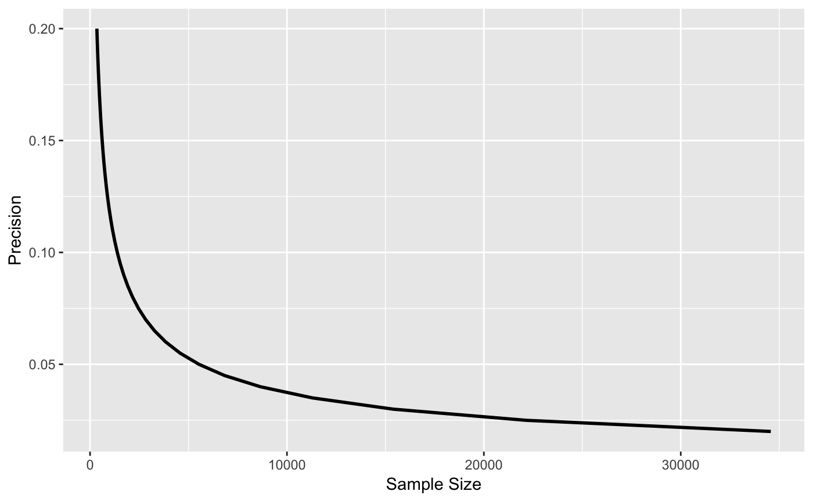
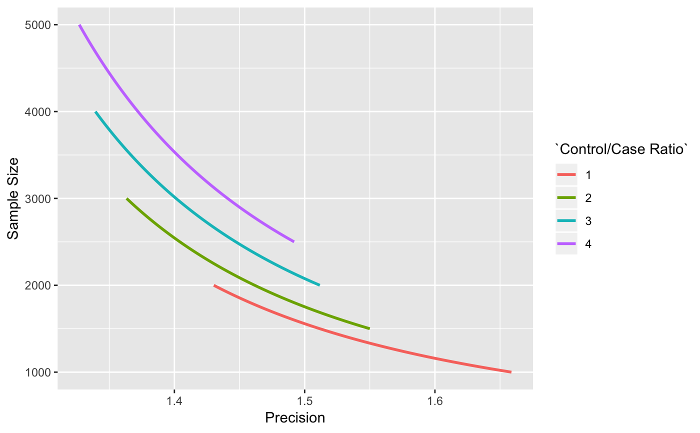
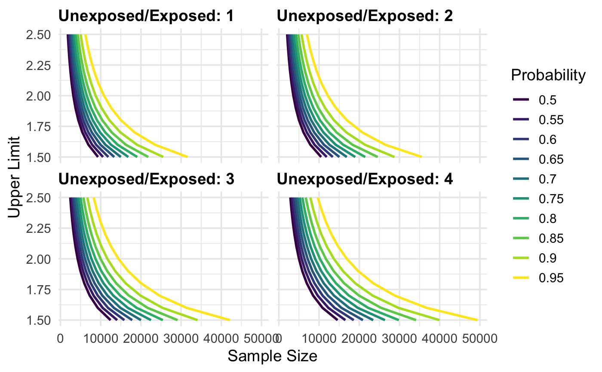

Simple line plots for the output of map_precisely(). Use
dplyr::group_by() to create multiple lines on the plot.
plot_sample_size(.df, xlab = "Sample Size", ylab = "Precision", line_size = 1) plot_precision(.df, xlab = "Precision", ylab = "Sample Size", line_size = 1) plot_upper_limit(.df, xlab = "Sample Size", ylab = "Upper Limit", line_size = 1)
| .df | a data frame with values to plot, possibly from |
|---|---|
| xlab | Label for the x-axis. |
| ylab | Label for the y-axis. |
| line_size | The width of the line. Default is 1. |
a ggplot
library(dplyr)#> #>#> #> #>#> #> #>library(ggplot2) map_precisely( n_risk_difference, precision = seq(from = .02, to = .20, by = .005), exposed = .4, unexposed = .3, group_ratio = 1 ) %>% plot_sample_size()map_precisely( precision_odds_ratio, n_cases = seq(from = 500, to = 1000, by = 10), exposed_cases = .6, exposed_controls = .4, group_ratio = 1:4 ) %>% group_by("Control/Case Ratio" = factor(group_ratio)) %>% plot_precision()map_precisely( upper_rate_ratio, upper_limit = seq(1.5, 2.5, by = .1), prob = seq(.50, .95, by = .05), exposed = .01, unexposed = .01, group_ratio = 1:4 ) %>% group_by("Probability" = factor(prob)) %>% plot_upper_limit(line_size = 1) + scale_color_viridis_d() + theme_precisely() + theme(legend.position = "right", strip.text = element_text(margin = margin(b = 5), hjust = 0)) + facet_wrap(~ group_ratio, labeller = as_labeller(function(x) paste("Unexposed/Exposed:", x)))